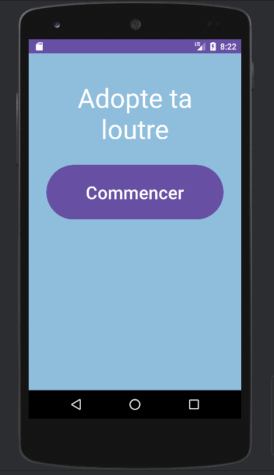
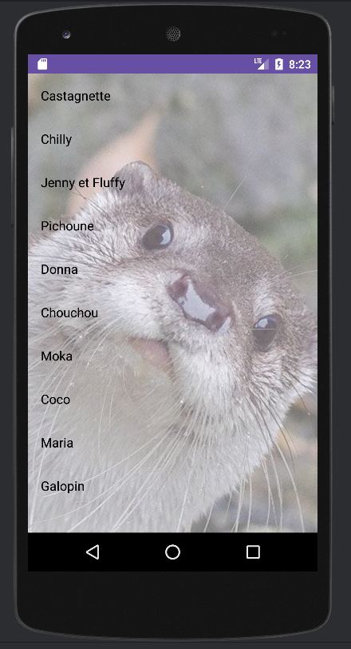

À propos
Adopte ta loutre est une application Android qui permet à l’utilisateur de parrainer une loutre dans un zoo.
Projet collectif · Application mobile
Une application Android pour parrainer une loutre dans un zoo et découvrir son univers.
En images


Adopte ta loutre est une application Android qui permet à l’utilisateur de parrainer une loutre dans un zoo.